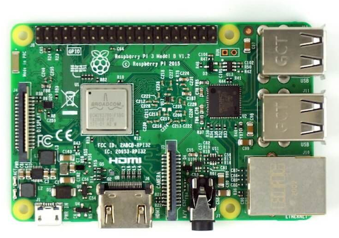
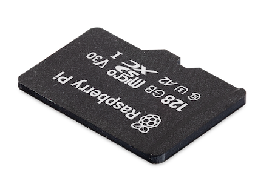
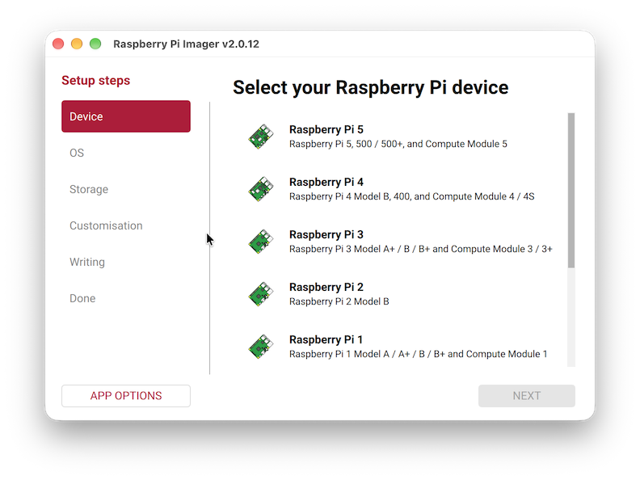
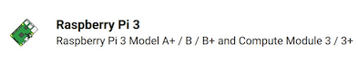
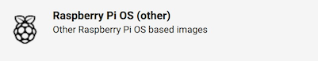
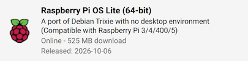
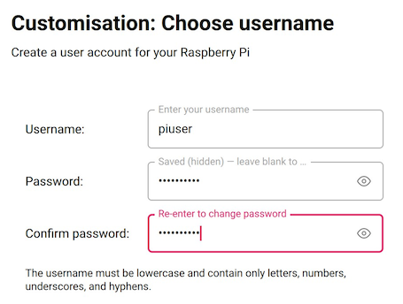
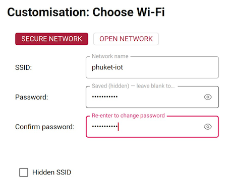
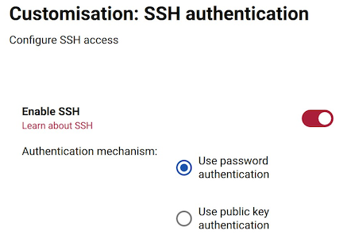
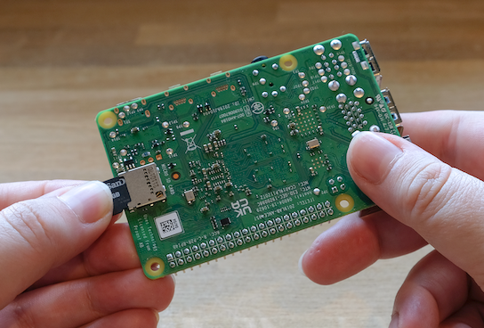

Raspberry Pi Setup
เตรียม Raspberry Pi จริงตั้งแต่ติดตั้งระบบปฏิบัติการลง microSD จนถึง SSH เข้าเครื่องครั้งแรก เพื่อให้พร้อมเรียน MQTT, Node-RED, SQLite และ Python ในแล็บถัดไป ใช้แบบ headless คือไม่ต้องต่อจอ คีย์บอร์ด หรือเมาส์กับ Pi ระหว่างใช้งานตามปกติ
ค่าของชุดเรียนนี้ยึดตามภาพ Raspberry Pi Imager ที่ให้มา:
| รายการ | ค่าที่เลือก |
|---|---|
| Device | Raspberry Pi 3 |
| หมวด OS | Raspberry Pi OS (other) |
| OS | Raspberry Pi OS Lite (64-bit), Debian Trixie |
| Username | piuser |
| Hostname | s001 ตามภาพ ใช้ชื่อไม่ซ้ำกันสำหรับแต่ละเครื่อง |
| รหัสผ่านบัญชี Pi | รหัสผ่านที่ตั้งไว้ |
| Wi-Fi | SECURE NETWORK, SSID phuket-iot |
| Hidden SSID | ไม่เลือก สำหรับเครือข่ายที่ประกาศชื่อ SSID ตามปกติ |
| SSH | Enable SSH และ Use password authentication |
| Raspberry Pi Connect | ปิด |
Hostname ในหน้านี้ใช้ s001 ตามภาพ ไม่ใช่ค่ามาตรฐานของ Pi หากเรียนพร้อมกันหลายเครื่อง ให้ใช้ชื่อไม่ซ้ำตามที่กำหนด เช่น s001, s002, s003 แล้วเปลี่ยนชื่อในคำสั่ง SSH ให้ตรงกับเครื่องของตน หากพบชื่อเครื่องตัวอย่างอื่นในแล็บถัดไป ให้ใช้ชื่อที่ตั้งไว้จริงแทน
ลำดับการติดตั้งพื้นฐาน
ก่อนเข้าสู่ MQTT, Node-RED หรือ SQLite ให้เตรียม Pi ตามลำดับนี้:
เตรียม Imager บน Windows/macOS, เลือก Pi 3 และ OS Lite 64-bit, เลือก microSD, ตั้งค่าบัญชีและเครือข่าย, เขียนและตรวจสอบการ์ด, บูต Pi แล้วจึง SSH เข้าไปตรวจระบบ ขั้นตอนต่อไปนี้ไม่ได้ทำใน Docker Container
1. เตรียมอุปกรณ์และ Raspberry Pi Imager
- Raspberry Pi 3 ที่จะใช้เรียน
- microSD สำหรับติดตั้ง OS และเครื่องอ่านการ์ด ชุดแล็บนี้แนะนำ 32 GB ขึ้นไปเพื่อมีพื้นที่สำหรับฐานข้อมูลและ log
- แหล่งจ่ายไฟ micro USB ที่เหมาะกับ Pi 3 เช่น 5 V 2.5 A และสายไฟที่จ่ายกระแสได้เพียงพอ
- Notebook Windows หรือ Mac ที่ต่อ Internet ได้สำหรับดาวน์โหลดและเขียน image
- ข้อมูล Wi-Fi
phuket-iotและรหัสผ่านเครือข่าย หากไม่ได้อยู่ในห้องเรียนให้ใช้เครือข่ายที่เข้าถึงได้จริงแทน
รู้จักบอร์ด Raspberry Pi 3

ภาพนี้เป็น Raspberry Pi 3 Model B ให้สังเกตชื่อรุ่นที่พิมพ์บนบอร์ดก่อนเลือก Device ใน Imager พอร์ต USB และ Ethernet อยู่ด้านขวาของภาพ ส่วน HDMI และช่องจ่ายไฟ micro USB อยู่บริเวณขอบล่าง ช่อง microSD อยู่ด้านใต้บอร์ด จึงไม่เห็นจากมุมนี้
สำหรับการเรียนแบบ headless เราจะใช้ microSD เก็บระบบปฏิบัติการ ต่อเครือข่ายผ่าน Wi-Fi หรือสาย LAN และจ่ายไฟผ่าน micro USB ไม่จำเป็นต้องต่อจอ HDMI หรือคีย์บอร์ดหลังตั้งค่า SSH เรียบร้อยแล้ว จับบอร์ดบริเวณขอบและวางบนพื้นผิวที่ไม่เป็นสื่อนำไฟฟ้า หรือใส่เคสก่อนใช้งาน
microSD คือที่เก็บระบบและข้อมูล

microSD ทำหน้าที่เป็นที่เก็บข้อมูลของเครื่อง ทั้ง Raspberry Pi OS โปรแกรม ฐานข้อมูล SQLite และไฟล์งาน เมื่อย้ายการ์ดหรือเขียน OS ใหม่จึงมีผลกับข้อมูลเหล่านี้ ไม่ใช่เพียงการเปลี่ยนอุปกรณ์เก็บรูปภาพ
การ์ดในภาพมีความจุ 128 GB เป็นเพียงตัวอย่าง ไม่จำเป็นต้องซื้อยี่ห้อหรือความจุตรงภาพ ชุดแล็บนี้แนะนำ 32 GB ขึ้นไปเพื่อเผื่อพื้นที่ข้อมูล เลือกการ์ดที่เชื่อถือได้และเตรียมเครื่องอ่าน microSD แบบ USB หรือ SD adapter ที่ใช้กับช่องอ่านการ์ดของ Notebook ได้ โดย adapter เป็นเพียงตัวแปลงขนาด ส่วนการ์ดที่เสียบเข้า Pi ต้องเป็น microSD
ดาวน์โหลด Raspberry Pi Imager จากเว็บไซต์ Raspberry Pi แล้วติดตั้งบน Notebook จากนั้นเปิดโปรแกรมและเสียบ microSD ผ่านเครื่องอ่านการ์ด
ชื่อแท็บและปุ่มอาจต่างกันเล็กน้อยตามรุ่น Imager แต่ให้ยึดชื่ออุปกรณ์ OS และค่าการตั้งค่าตามภาพในหน้านี้
2. เลือก Device เป็น Raspberry Pi 3
เมื่อเปิด Raspberry Pi Imager จะเห็นขั้นตอนด้านซ้าย เริ่มที่ Device เพื่อระบุรุ่นบอร์ดที่ใช้ ภาพหน้าจอนี้เป็น Imager v2.0.12 โดยยังไม่ได้เลือกรุ่น จึงเห็นปุ่ม NEXT เป็นสีเทา:

คลิกรายการ Raspberry Pi 3 ให้ตรงกับบอร์ดของชุดเรียน ไม่ใช่ Raspberry Pi 5 หรือ Pi 4 ที่อยู่เหนือขึ้นไป หากยังไม่เห็นรายการ ให้เลื่อนภายในรายการรุ่น เมื่อเลือกแล้วจึงกด NEXT ไปขั้น OS ภาพขยายด้านล่างช่วยให้ตรวจชื่อรายการได้ชัดเจน:

รายการนี้เป็นกลุ่ม Pi 3 ไม่ใช่ Pi 4 หรือ Pi 5 ให้ตรวจรุ่นที่พิมพ์อยู่บนบอร์ดก่อนเริ่ม หากบอร์ดไม่ใช่ Pi 3 อย่าเลือกให้ตรงภาพโดยไม่ตรวจฮาร์ดแวร์จริง
3. เลือก Raspberry Pi OS Lite (64-bit)
ในหน้า OS เปิดหมวด Raspberry Pi OS (other):

จากนั้นเลือก Raspberry Pi OS Lite (64-bit) ซึ่งในภาพระบุว่าเป็น Debian Trixie และไม่มี desktop environment:

Lite ไม่มีหน้าจอ Desktop แบบกราฟิก แต่ยังใช้ Linux, SSH และบริการ IoT ได้ ส่วน 64-bit คือสถาปัตยกรรมของ OS ไม่ใช่ความจุของการ์ด จึงอย่าเลือก Lite (32-bit), รุ่น Desktop หรือ Legacy แทนสำหรับชุดเรียนนี้
วันเผยแพร่ 2026-10-06 และขนาดดาวน์โหลดในภาพเป็นข้อมูลของ image ที่ถ่ายไว้ หากรายการอัปเดต ให้ตรวจชื่อ Lite, 64-bit และฐาน Debian Trixie เป็นหลัก ไม่จำเป็นต้องมีวันหรือขนาดดาวน์โหลดตรงภาพทุกตัว
4. เลือก Storage ให้ถูกใบ
- เปิดหน้า Storage แล้วเลือก microSD ที่เสียบไว้
- ตรวจยี่ห้อหรือชื่ออุปกรณ์และความจุอีกครั้ง
- ถ้าไม่แน่ใจ ให้ถอดการ์ดแล้วดูว่าอุปกรณ์ใดหายไป จากนั้นเสียบกลับและเลือกใหม่
- ไปขั้นตอน Customisation โดยยังไม่ข้ามการตั้งค่าบัญชี เครือข่าย และ SSH
ถ้ามีตัวเลือก Exclude system drives ให้คงการป้องกันนี้ไว้
5. ตั้ง Hostname และเขตเวลา
ในขั้น Customisation: Choose hostname กรอก s001 ตามภาพ หรือชื่อประจำเครื่องที่ผู้สอนกำหนด Hostname คือชื่อของ Raspberry Pi บนเครือข่าย ไม่ใช่ชื่อผู้ใช้ piuser และไม่ใช่ชื่อ Wi-Fi phuket-iot:

ใช้ตัวอักษรภาษาอังกฤษ ตัวเลข และขีดกลาง - โดยไม่เว้นวรรค สำหรับชุดเรียนแนะนำตัวพิมพ์เล็กและชื่อสั้นที่จำง่าย แต่ละเครื่องต้องมีชื่อไม่ซ้ำกัน เช่น s001 และ s002 อย่าให้นักศึกษาทุกเครื่องตั้งเป็น s001 พร้อมกัน
ในช่องนี้ใส่เพียง s001 ไม่ต้องเติม .local ส่วนเวลาเชื่อมต่อ SSH บน Notebook จะใช้ ssh piuser@s001.local ถ้าเครื่องมี OS อยู่แล้วและจะเปลี่ยน hostname ภายหลัง ไม่จำเป็นต้องเขียน microSD ใหม่เพียงเพื่อเปลี่ยนชื่อ
ในหน้า Localisation เลือกประเทศ/เมืองให้ตรงสถานที่ใช้งาน สำหรับห้องเรียนในประเทศไทยใช้ Thailand / Bangkok และเขตเวลา Asia/Bangkok ส่วน keyboard layout ให้ตรงกับคีย์บอร์ดที่ใช้ เช่น US
การตั้งประเทศเกี่ยวข้องกับช่องสัญญาณ Wi-Fi ที่อนุญาตด้วย จึงไม่ควรปล่อยเป็นประเทศอื่นเพียงเพราะเป็นค่าเดิมที่โปรแกรมจำไว้
6. สร้างผู้ใช้ piuser
ในหน้า Customisation: Choose username กำหนดดังนี้:
| ช่อง | ค่าที่ใส่ |
|---|---|
| Username | piuser |
| Password | รหัสผ่านที่ตั้งไว้สำหรับบัญชีนี้ |
| Confirm password | พิมพ์รหัสผ่านบัญชีนี้ซ้ำให้ตรงกัน |

รหัสนี้ใช้เข้าบัญชี Linux ผ่าน SSH และอาจถูกถามเมื่อใช้ sudo ไม่ใช่รหัส Wi-Fi และไม่ใช่ MQTT password ที่จะตั้งในแล็บหลัง ภาพแสดงเพียงจุดปิดบัง ไม่ได้ให้รหัสผ่านจริงมา ห้ามใช้ข้อความ รหัสผ่านที่ตั้งไว้ เป็นรหัสผ่านตามตัวอักษร
ใช้ตัวอักษรพิมพ์เล็กตามภาพ ชื่อ piuser เป็นบัญชีที่เราสร้างขึ้นเอง จึงไม่ควรทดลองเข้าด้วย pi หรือสมมติว่ามี default password
7. ตั้ง Wi-Fi phuket-iot
ในหน้า Customisation: Choose Wi-Fi เลือกและกรอกตามภาพ:
| รายการ | ค่าที่ใช้ |
|---|---|
| ประเภทเครือข่าย | SECURE NETWORK |
| SSID | phuket-iot |
| Password | รหัสผ่านจริงของ Wi-Fi phuket-iot |
| Confirm password | พิมพ์รหัสผ่าน Wi-Fi ซ้ำให้ตรงกัน |
| Hidden SSID | ไม่เลือก เว้นแต่เครือข่ายนั้นซ่อนชื่อจริง |

SSID และรหัสผ่านแยกตัวพิมพ์ใหญ่/เล็ก ต้องไม่มีช่องว่างเกินมา และ Notebook ที่จะ SSH ควรอยู่ในเครือข่ายที่เข้าถึง Pi ได้
8. เปิด SSH และใช้ Password Authentication
ในหน้า Customisation: SSH authentication:
- เปิด Enable SSH
- เลือก Use password authentication
- ไม่เลือก Use public key authentication ในขั้นเริ่มต้นของชุดเรียนนี้

เมื่อ SSH เข้าเครื่อง ให้ใช้ user piuser และรหัสบัญชีที่ตั้งในหัวข้อ 6 ไม่ใช่รหัส Wi-Fi การใช้ SSH key สามารถเรียนเพิ่มภายหลังได้ แต่การตั้งค่ารอบนี้ให้ตรงภาพก่อน
9. ปิด Raspberry Pi Connect
ในหน้า Customisation: Raspberry Pi Connect ให้ Enable Raspberry Pi Connect เป็น Off ตามภาพ ไม่ต้อง Sign in หรือขอ token:

การปิด Connect ไม่ได้ปิด SSH ที่เปิดในหัวข้อก่อน เราจะเริ่มจาก SSH ภายใน LAN/Wi-Fi และใช้ Cloudflare Tunnel ในแล็บ Remote Access ภายหลัง
10. ตรวจค่าก่อน Write และรอ Verify
ตรวจหน้าสรุปอีกครั้งว่าเป็น Pi 3, Lite 64-bit, microSD ถูกใบ, user piuser, Wi-Fi phuket-iot, SSH แบบรหัสผ่าน และ Connect ปิดอยู่
- กด Write หรือปุ่มเริ่มเขียนของ Imager
- เมื่อโปรแกรมเตือนว่าจะลบข้อมูล ให้ยืนยันเฉพาะหลังตรวจ Storage ถูกต้องแล้ว
- หาก Windows/macOS ขอสิทธิ์เข้าถึงอุปกรณ์ ให้สิทธิ์กับ Imager เพื่อเขียนการ์ด
- รอการดาวน์โหลด เขียน และ Verify ให้ครบ ไม่ดึงการ์ดออกระหว่างทำงาน
- เมื่อขึ้น Done/Finish ให้จบงานและ eject การ์ดอย่างปลอดภัย หากมีหน้าต่างชวน Format การ์ดหลังเขียน OS ให้ยกเลิก ไม่ Format ซ้ำ
11. ใส่การ์ดและบูตครั้งแรก

ภาพนี้แสดงตำแหน่งช่อง microSD ที่ด้านใต้บอร์ด ให้พลิกดูช่องจริงก่อนเสียบ ไม่สับสนกับพอร์ต USB หรือช่องสายแพด้านบน การ์ดที่ใช้ต้องผ่าน Write และ Verify ใน Imager เรียบร้อยแล้ว และถ้าใช้ SD adapter กับ Notebook ต้องถอดเฉพาะ microSD ออกจาก adapter ก่อน
- ขณะ Pi ยังไม่ได้เสียบไฟ ให้จับ microSD ที่ขอบ หันด้านฉลากออกจากบอร์ด และเลื่อนเข้าช่องตามแนวอย่างเบามือ สำหรับ Pi 3 การ์ดจะเลื่อนจนสุดโดยไม่ต้องรอเสียงคลิก หากติดขัดให้หยุดตรวจทิศทาง ไม่ฝืนกด
- ถ้าจะใช้สาย LAN และบอร์ดมีพอร์ต Ethernet ให้ต่อ Pi เข้ากับ Router/Switch ที่ Notebook เข้าถึงได้
- เสียบแหล่งจ่ายไฟ micro USB ที่ช่องจ่ายไฟของ Pi
- รอการตั้งค่าครั้งแรกหลาย ๆ นาที อาจมีการ reboot ระหว่างเตรียมระบบ อย่าถอดไฟเพียงเพราะยัง SSH ไม่ติดทันที
อย่าถอดหรือใส่ microSD ขณะ Pi มีไฟ หากต้องถอดหลังใช้งาน ให้สั่ง sudo poweroff รอให้ระบบปิดและหยุดเขียนข้อมูล แล้วถอดแหล่งจ่ายไฟก่อนดึงการ์ดออกอย่างเบามือ เพื่อลดความเสี่ยงที่ระบบไฟล์หรือฐานข้อมูลเสียหาย ดูทิศทางการ์ดเพิ่มเติมใน คู่มือการใส่ microSD ของ Raspberry Pi
OS Lite ไม่มี Desktop หากต่อจอจะเห็นหน้าจอข้อความหรือ login prompt ซึ่งเป็นพฤติกรรมปกติ ไม่ได้แปลว่าติดตั้งผิด
12. SSH เข้า Pi จาก Windows/macOS
เปิด Windows Terminal / PowerShell บน Windows หรือ Terminal บน macOS แล้วรันคำสั่งนี้บน Notebook:
ssh piuser@s001.localหากตั้ง hostname อื่น ให้แทน s001 ด้วยชื่อที่ตั้งไว้ เมื่อเชื่อมต่อครั้งแรก ให้ตรวจ fingerprint ของเครื่องกับผู้สอนหรือจากจอ Pi ก่อนตอบ yes แล้วใส่รหัสผ่านบัญชี piuser ระหว่างพิมพ์รหัสผ่าน Terminal จะไม่แสดงจุดหรือดอกจัน เป็นเรื่องปกติ
หากชื่อ .local หาไม่พบ ให้ดู IP ของ Pi จากหน้า DHCP client ของ Router หรือใช้จอกับคีย์บอร์ดบน Pi รัน hostname -I แล้ว SSH ด้วย IP จริง เช่น:
ssh piuser@192.168.1.50192.168.1.50 เป็นตัวอย่าง ไม่ใช่ IP ที่ทุกเครื่องจะได้ เมื่อเข้าได้แล้วควรเห็น prompt คล้าย:
piuser@s001:~ $ดูการติดตั้ง OpenSSH Client บน Windows และวิธีต่อ LAN โดยตรงเพิ่มเติมใน SSH from Mac or Windows over Direct LAN
13. ตรวจว่า OS และบัญชีตรงกับที่เลือก
คำสั่งต่อไปนี้รันภายใน SSH session บน Raspberry Pi ไม่ใช่บน Notebook:
whoami
hostname
hostname -I
cat /etc/os-release
uname -m
getconf LONG_BIT
timedatectl
systemctl status ssh --no-pager| สิ่งที่ตรวจ | ผลที่คาดหวัง |
|---|---|
whoami |
piuser |
hostname |
ชื่อที่ตั้ง เช่น s001 |
hostname -I |
มี IP ที่ Notebook เข้าถึงได้ |
/etc/os-release |
มี codename trixie |
uname -m |
aarch64 |
getconf LONG_BIT |
64 |
| เขตเวลา | Asia/Bangkok สำหรับเครื่องในประเทศไทย |
| SSH service | active (running) |
ถ้า uname -m เป็น armv7l หรือ LONG_BIT เป็น 32 ให้กลับไปตรวจว่าได้เลือก OS Lite (64-bit) จริงหรือไม่ ก่อนเดินหน้าไปแล็บอื่น
14. อัปเดตระบบหลังเข้าเครื่องได้แล้ว
ต้องต่อ Internet ได้ก่อน จาก SSH session รัน:
sudo apt update
sudo apt full-upgrade -y
sudo rebootหลังสั่ง reboot การเชื่อมต่อ SSH จะขาด รอ Pi กลับมาแล้ว SSH เข้าใหม่ด้วยคำสั่งเดิม หากเชื่อมด้วย IP แล้วไม่ติด ให้ตรวจ IP อีกครั้งเพราะ DHCP อาจแจกค่าใหม่
ปัญหาที่พบบ่อยในการเริ่มต้น
| อาการ | ตรวจอะไร |
|---|---|
ไม่พบ phuket-iot หรือ Pi ไม่ได้ IP |
SSID/รหัส Wi-Fi ถูกต้อง, เปิด 2.4 GHz สำหรับ 3B, ประเทศถูกต้อง, Router เปิดอยู่ |
Could not resolve hostname |
สะกด hostname, อยู่เครือข่ายที่เข้าถึงกันได้, ลองใช้ IP จริงแทน .local |
Connection timed out |
IP ถูกต้อง, Pi บูตเสร็จ, ไฟเพียงพอ, Firewall/Client isolation ไม่ขวาง |
Connection refused |
ตรวจว่าเปิด SSH ใน Imager และ OS บูตสมบูรณ์แล้ว |
Permission denied |
ใช้ piuser และรหัสบัญชี Pi ไม่ใช่รหัส Wi-Fi; ตรวจตัวพิมพ์/keyboard layout |
REMOTE HOST IDENTIFICATION HAS CHANGED หลังเขียน OS ใหม่ |
ยืนยันว่าเป็น Pi ของตนและมีการลง OS ใหม่จริงก่อนจัดการรายการ host key เก่า อย่าข้ามคำเตือนโดยไม่ตรวจ |
| เข้าระบบได้แต่ไม่มี Desktop | เป็น OS Lite ตามที่เลือกไว้ ใช้งานผ่านคำสั่งและเว็บบริการต่อไป |
ถ้ายังเข้าไม่ได้ ให้ต่อจอกับคีย์บอร์ดชั่วคราวเพื่อตรวจ hostname, IP และ SSH หรือดู Troubleshooting
ตรวจทรัพยากร
free -h
df -h
hostname -Iตรวจ Service, Port และ Log
ตัวอย่างนี้ตรวจ service ssh ซึ่งเปิดไว้ใน Imager เมื่อตรวจ service อื่นในแล็บถัดไป ให้เปลี่ยนชื่อหลัง status หรือ -u ให้ตรงกับ service นั้น
systemctl status ssh --no-pager
ss -lntp
journalctl -u ssh -n 50 --no-pagerenable ทำให้ service เริ่มพร้อมระบบ ส่วน --now สั่งให้เริ่มในรอบปัจจุบันด้วย เช่น:
sudo systemctl enable --now sshเมื่อตรวจปัญหา ให้เริ่มจาก service และ log จากนั้นตรวจ listening port และทดสอบผ่าน localhost ก่อนทดสอบจากเครื่องอื่นใน LAN
ตรวจ LAN และ Wi-Fi
nmcli device status
ip -br addr
ip route get 8.8.8.8
hostname
hostname -Iการสร้าง Wi-Fi profile, ตรวจ SSID และจัดการ Netplan อยู่ที่ Raspberry Pi Network and Wi-Fi
Checklist ก่อนเริ่ม LAB 01
- ใช้ Raspberry Pi OS Lite (64-bit) และตรวจได้ว่าเป็น Trixie /
aarch64/64 - เข้าด้วย
piuserได้ และจำรหัสผ่านบัญชี Pi แยกจากรหัส Wi-Fi - Notebook ติดต่อ Pi ผ่านเครือข่ายได้ และ SSH เข้าเครื่องได้จริง
- Hostname ไม่ซ้ำกับเครื่องอื่น รู้ทั้ง hostname และ IP ของเครื่องตน
- เขตเวลาถูกต้อง อัปเดตระบบแล้ว และ SSH กลับเข้าได้หลัง reboot
- ตรวจ RAM, disk และ network พื้นฐานแล้ว จึงเริ่ม LAB 01 - ตรวจสอบระบบ Raspberry Pi
แหล่งอ้างอิง
- Raspberry Pi Imager สำหรับ Windows/macOS/Linux
- คู่มือทางการ: เตรียมอุปกรณ์ เขียน OS และตั้งค่า Imager
- คู่มือทางการ: SSH และ Remote Access
- ข้อมูล Raspberry Pi 3 Model B
ภาพประกอบทั้ง 7 ภาพเป็นหน้าจอที่ใช้กำหนดค่าของชุดเรียนนี้ รหัสผ่านในภาพถูกปิดบัง และไม่ได้เก็บรหัสผ่านจริงไว้ในเอกสาร
Lab ที่เกี่ยวข้อง
- Installation Roadmap
- LAB 01 - ตรวจสอบระบบ Raspberry Pi
- Troubleshooting
- Raspberry Pi Network and Wi-Fi
- Raspberry Pi IoT Architecture
- SSH from Mac or Windows over Direct LAN
กลับไป IoT Lab Overview